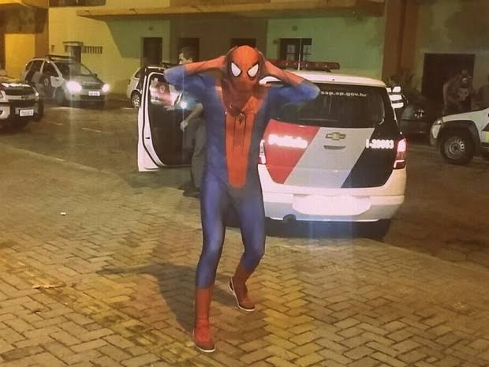

Homem-Aranha: Preso em Casa (O Sistema é Foda) 🕷️🚔
A Sinopse Mais Honesta do Mundo Peter Parker achou que São Paulo era igual a Nova York, mas descobriu da pior forma que o Muralha Paulista e o Smart Sampa não querem saber de super-herói.Após ser flagrado pelas câmeras da prefeitura escalando um prédio no Itaim Bibi, o "Miranha do Brás" foi cercado pela equipe da 3ª CERCO e levado direto para o Deic. Agora, o herói está trancado em uma cela de 2x2 metros, dividindo o espaço com o "Duende Verde da Cracolândia" e o "Sexteto Sinistro do Golpe do Pix".Sem lançador de teia (que foi apreendido como arma branca) e sem uniforme, ele precisa sobreviver ao maior desafio da sua vida: o banho de sol e o café com pão amanhecido da delegacia.
